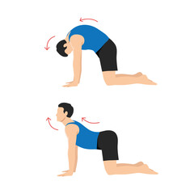
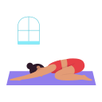

Tree Pose (Vrksasana): Balance on one foot, while holding the other foot to your calf or above the knee, helps with building strength, improving flexibility and balance.

Cat-cow Pose: Relieves back pain and boosts mobility in people with lower back pain

Legs Up The Wall Pose: Relaxes your body and mind therefore enhancing sleep quality and quantity.

Downward Dog Pose: Benefits heart health paired with reducing stress levels and body-wide inflammation, which contributes to a healthier heart.

Corpse Pose(Savsana): relieves back pain and boosts mobility in people with lower back pain

Mental wellbeing is being mentally well means that your mind is in order and functioning in your best interest. You are able to think, feel and act in ways that create a positive impact on your physical and social well-being.

The pose for beginners: Sukhsana, is a great pose for relieving stress and a really simple pose, all you need to do is sit cross-legged on a yoga mat with your hands on your knees, palms up. Keep your spine as straight as you can. Then, just close your eyes and inhale.

Child's pose(Balasana): one of the most healing yoga poses, awakens the connection between the breath and body and sends calming energy through all the muscles, it gives you a great opportunity to slip away from your busy mind and unwind, especially when you're tired or overwhelmed.